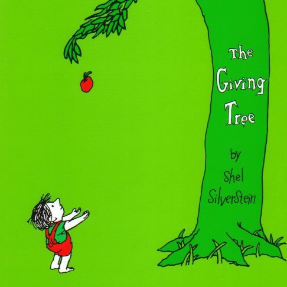
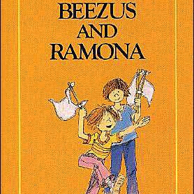
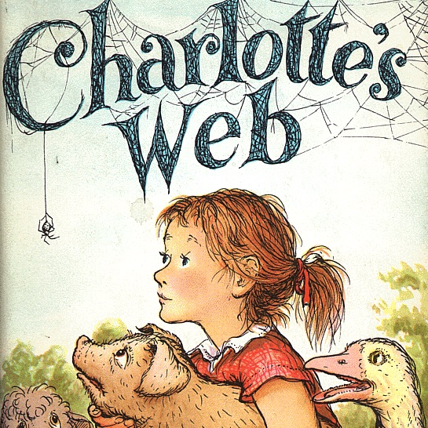
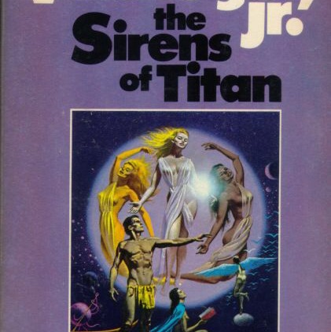
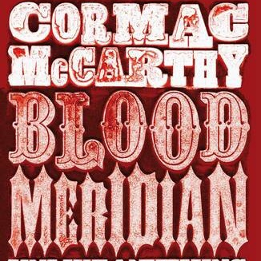
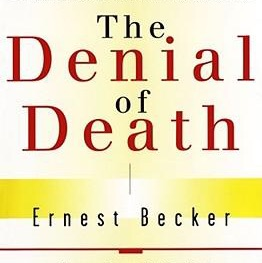
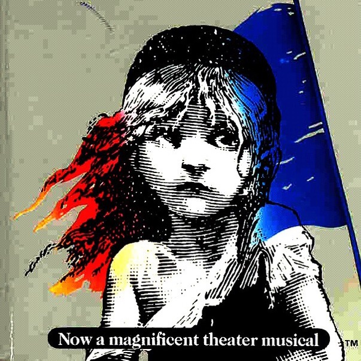
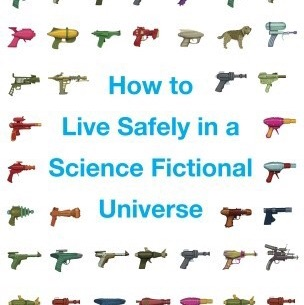
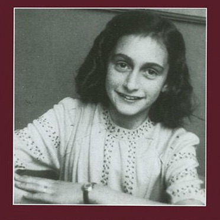

THE TOP TEN BOOKS OF ALL TIME, ACCORDING TO ME 📚
Inspired by @ListPrompts. I’ve listed a lot about books and authors so here I’m going to cast a wide net and pick some favorites across the spectrum.
-

The Giving Tree by Shel Silverstein
My first true love from before my clear memory begins. I still ❤️ it entirely so I don't want to hear about all your negatives interpretations 😉.
-

Beezus and Ramona by Beverley Cleary
The best of a perfect series.
-

Charlotte's Web by E.B. White
Perfection.
-

Sirens of Titan by Kurt Vonnegut
It is hard to pick a favorite Vonnegut but this is both great and a little less popular so it seemed a good choice. And it's the purest example of the distinctive juxtaposition of cynicism + humanism in Vonnegut.
-

Blood Meridian by Cormac McCarthy
This pretty much demands multiple readings and probably some background reading as well but it is a powerful good book.
-

The Denial of Death by Earnest Becker
A dated but brilliant and very eye opening survey of modern psychological thinking. Possibly this book changed my life.
-

Les Miserables by Victor Hugo
Another life changer. This book reignited my love of literature after a long spell from mid-high school to early twenties of non fiction reading and not feeling smart enough to read "real" books. Also an absolutely beautiful book.
-
Antony and Cleopatra by William Shakespeare
Again, hard to pick a favorite but this is probably it. Staggeringly beautiful, thematically powerful, utterly moving.
-

How to Live Safely in a Science Fictional Universe by Charles Yu
Gotta have some contemporary lit on here so this is my wildcard choice. I love everything about this funny oddball touching book.
-

The Diary of a Young Girl by Anne Frank
We also need a memoir/biography and this tops that list for me. So sweet, so insightful, so inspiring, and so devastatingly sad.